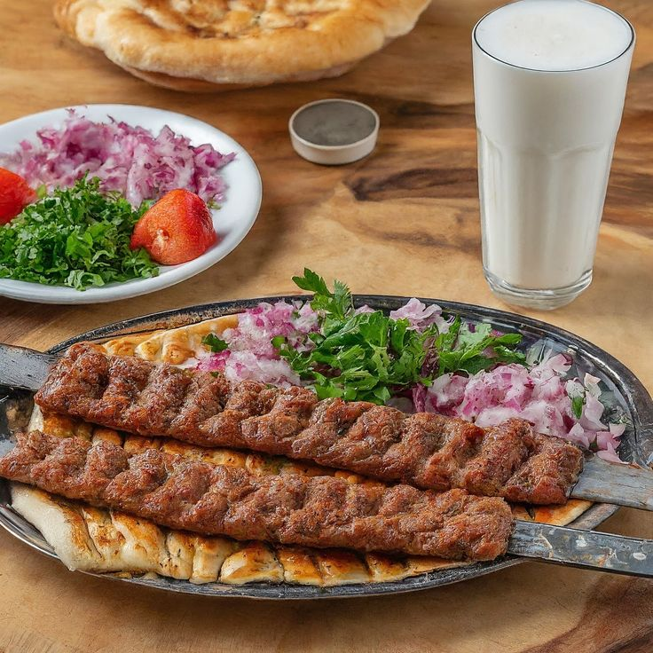
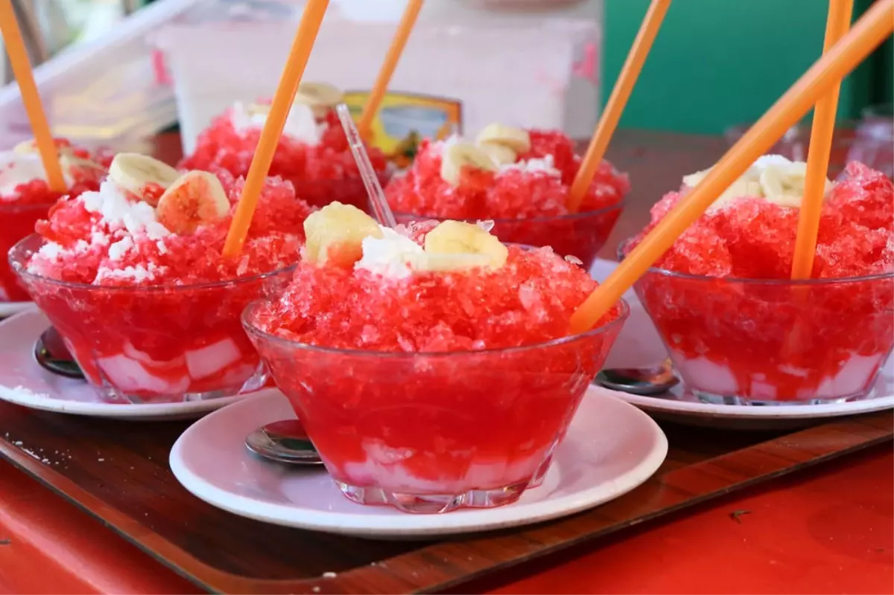

Adana
Sıcağıyla samimiyeti, kebabıyla lezzeti sarar Adana'yı, yürekleri ısıtır.
Adana, Türkiye'nin en sıcak şehirlerinden biridir ve kebabıyla ünlüdür.
Taşköprü, Adana'nın simgelerinden biridir ve Roma döneminden kalmadır.
Her yıl düzenlenen Altın Koza Film Festivali, Adana'da büyük ilgi görür.

Adana Arkeoloji Müzesi
Çukurova bölgesinin zengin arkeolojik eserlerini sergileyen müze.

Atatürk Evi
Mustafa Kemal Atatürk'ün Adana'da kaldığı tarihi ev.

Etnografya Müzesi
Adana'nın kültürel mirasını yansıtan etnografik eserler.

Adana Kebap
Acılı kıymayla hazırlanan ve mangalda pişirilen Adana'nın simge yemeği.
Şırdan
Baharatlı iç pilavla doldurulmuş, özel pişirme tekniğiyle hazırlanan Adana'ya özgü bir sakatat yemeği.

Bici Bici
Sıcak yaz günlerinin vazgeçilmezi, gül şerbetiyle tatlandırılan buzlu tatlı.